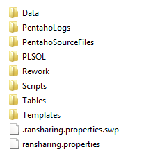

Uplink Interference (Nokia UMTS)¶
1. OBJETIVO¶
El presente documento buscar explicar y detallar el proceso que genera Uplink Interference (Nokia UMTS)
2. ALCANCE¶
Áreas involucradas: Performance de Red
3. DEFINICIONES¶
- Cortado: Servidor LINUX en donde se importan los CSV desde el proveedor.
El nombre es cortado.claro.amx y la dirección IP física es 10.105.146.8
4. DESCRIPCIÓN GENERAL¶
Nokia UMTS Uplink Interference
Este desarrollo tiene la finalidad de detectar y clasificar la interferencia en las celdas UMTS tomando RTWP en función del tráfico de voz. Al cruzar estos parámetros, obtenemos una nube de puntos la cual se modela con una regresión lineal, obteniendo así una pendiente y una ordenada al origen para cada celda. Esta información demuestra cómo evoluciona la interferencia según crece el tráfico. En función de estos valores se clasifica la celda dentro de 4 categorías que son indicadores de las acciones a tomar en cada caso.
5. MACRO FLUJO DEL PROCESO¶
6. DESCRIPCIÓN DETALLADA¶
6.1. Datos de origen¶
Server Origen: perdido.claro.amx
6.2. Datos Destino¶
- Server Destino: cortado.claro.amx
- BD: Smart2
- Frecuencia de corrida del proceso: 1 minuto
- RAW Si/No: No
- Hour Si/No: Si
- Day Si/No: No
- BH Si/No: Si
- ISABH Si/No: Si
6.3. Listado de Tablas Utilizadas¶
Las tablas utilizadas son:
- UMTS_UL_INTFRNC_WCEL_HOUR
- TABLERO_UMTS_ULINTFN_WCEL_WEEK
Las Tablas utilizadas desde Perdido son:
7. REPROCESO MANUAL¶
Pendiente de agregar
8. CONTROL DE CAMBIOS¶
| Fecha | Responsable | Ticket Jira | Detalle | Repositorio |
|---|---|---|---|---|